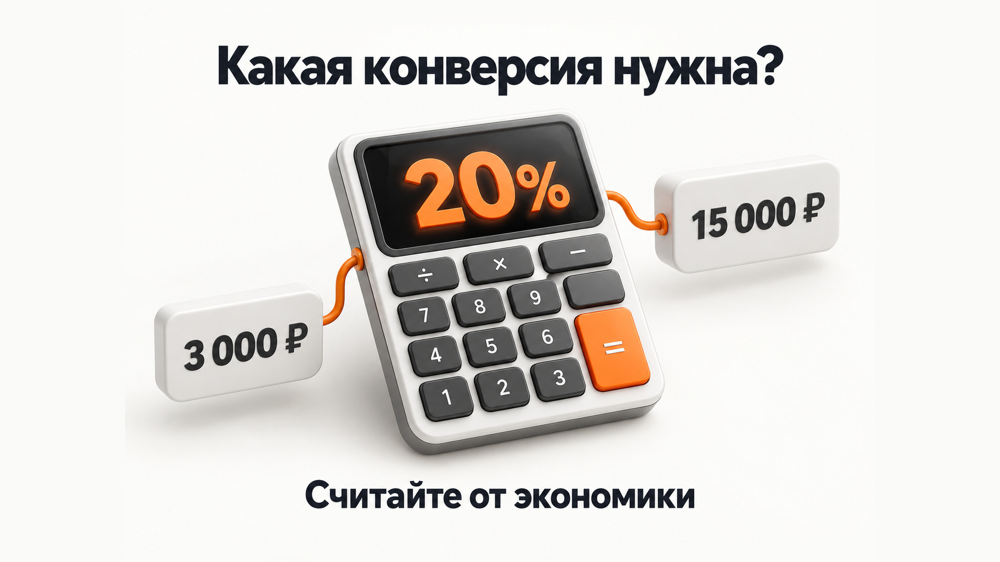
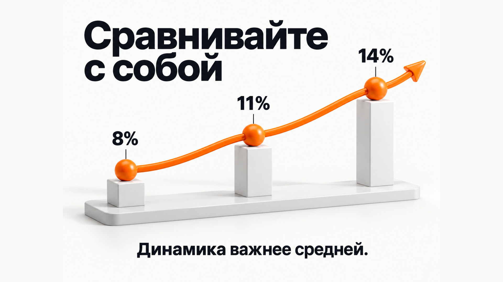
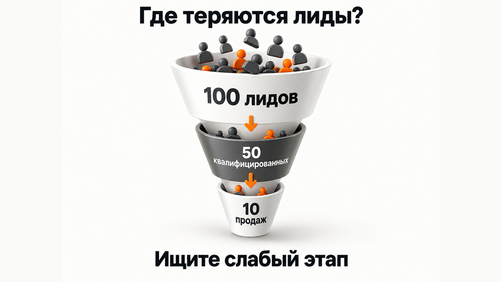

Блог о платном трафике
Конверсия лида в продажу: какая считается нормальной
Конверсия лидов в продажи показывает, какая доля полученных обращений в итоге заканчивается покупкой, оплатой или заключением договора.
Если из 100 лидов клиентами стали 10 человек, конверсия составляет 10%.
Но главный вопрос обычно не в том, как ее посчитать. Владельцу бизнеса хочется понять: 10% - это хорошо или плохо? Какая средняя конверсия лида в продажу и на какой показатель ориентироваться?
Универсальной нормы здесь нет. Даже внутри одной ниши конверсия может отличаться в несколько раз из-за источника трафика, цены продукта, критериев квалификации, работы менеджеров, региона, длительности сделки и самого определения лида.
Поэтому я бы не пытался найти в интернете условные «нормальные 15%». Полезнее определить собственный ориентир исходя из экономики бизнеса и сравнивать текущие результаты с сопоставимыми данными.
Как считать конверсию лида в продажу
Базовая формула:
Конверсия = количество продаж / количество лидов × 100%
Например, компания получила 80 лидов. Из них 12 завершились продажей.
12 / 80 × 100% = 15%.
Конверсия из лидов в продажи составляет 15%.
Вроде бы все просто. Но именно здесь часто начинаются ошибки.
Сначала нужно договориться, что считать лидом и что считать продажей.
Лидом может быть:
- любая отправленная форма;
- звонок;
- сообщение в мессенджере;
- подтвержденное обращение;
- только квалифицированный потенциальный клиент.
Продажей тоже могут считать разные события: созданный заказ, подписанный договор, внесенную предоплату или фактически полученные деньги.
Если определения постоянно меняются, сравнивать проценты бессмысленно.

Почему средняя конверсия лида в продажу почти ничего не говорит
По запросу о средней конверсии легко найти таблицы с процентами для B2B, недвижимости, интернет-магазинов, образования и других сфер.
Проблема в том, что две компании даже из одной категории могут измерять совершенно разные вещи.
Представим две фирмы, продающие одну и ту же услугу.
В первой лидом считается любая заявка с сайта.
Во второй менеджер сначала проверяет регион, потребность, бюджет и сроки, и только после этого переводит обращение в статус квалифицированного лида.
Если считать продажи от всех заявок, первая компания может получить 7%.
Если считать продажи только от квалифицированных обращений, вторая получит 30%.
Сравнивать эти цифры напрямую нельзя.
То же самое происходит с источниками.
Лид по конкретному горячему поисковому запросу и человек, оставивший контакты после рекламы на холодную аудиторию, формально могут одинаково называться лидами. Вероятность покупки у них будет разной.
Поэтому опубликованный где-то показатель «средняя конверсия из лидов в продажи - 15%» без методики расчета дает очень мало полезной информации.
От чего зависит конверсия лида в продажу
Качество лидов
Если реклама приводит людей, которым действительно нужен продукт и подходят условия покупки, продавать их обычно проще.
Если большая часть обращений не соответствует географии, бюджету или самому продукту, итоговая конверсия будет ниже.
Поэтому я всегда разделяю обычную заявку и квалифицированный лид.
Подробнее эту проблему я разбирал в статье «Нецелевые и некачественные лиды из Яндекс Директа».
Источник обращения
Поиск, РСЯ, SEO, рекомендации, повторные клиенты, агрегаторы и холодная реклама дают аудиторию с разным уровнем готовности покупать.
Общий процент по всем каналам способен скрыть эту разницу.
Гораздо полезнее считать:
Источник → лиды → квалифицированные лиды → продажи.
Цена и сложность продукта
Купить недорогой товар можно за несколько минут.
При продаже недвижимости, промышленного оборудования или сложной B2B-услуги клиент может сравнивать предложения неделями или месяцами.
Чем сложнее решение, тем сильнее на итог влияют переговоры, коммерческое предложение, согласование условий и последующая работа менеджера.
Работа отдела продаж
Даже хороший потенциальный клиент еще не является продажей.
На результат влияют:
- скорость первого ответа;
- количество попыток связаться;
- качество консультации;
- знание продукта;
- работа с возражениями;
- последующие контакты;
- коммерческое предложение;
- контроль зависших сделок.
Если качественные обращения стабильно не доходят до оплаты, бесконечно менять рекламу бессмысленно. Нужно смотреть дальше по воронке.
Оффер и условия покупки
Цена, сроки, гарантии, ассортимент, способы оплаты, доставка и другие условия могут полностью изменить вероятность сделки.
Компания может получать абсолютно целевые обращения и при этом проигрывать конкурентам уже после получения заявки.
Какая конверсия лидов в продажи должна быть именно у вас
Я бы считал нужный показатель не от «средней по рынку», а от допустимой стоимости продажи.
Для этого нужны две цифры:
- Сколько стоит один лид.
- Сколько максимум бизнес готов платить за одну продажу.
Допустим:
CPL = 3 000 ₽.
Бизнес может платить за продажу максимум:
15 000 ₽.
Тогда необходимая конверсия:
3 000 / 15 000 × 100% = 20%.
То есть примерно каждый пятый лид должен становиться покупателем.
Теперь представим другой бизнес с тем же CPL 3 000 ₽, но допустимая стоимость продажи составляет 60 000 ₽.
3 000 / 60 000 × 100% = 5%.
Для первого проекта 5% окажутся плохим результатом. Для второго те же 5% полностью соответствуют экономике.
Вот почему вопрос «какая средняя конверсия лида в продажу?» лучше заменить на другой:
какая конверсия нужна моему бизнесу, чтобы стоимость продажи была допустимой?
Связь стоимости заявки, конверсии и стоимости продажи подробнее разобрана в статье «CPS в маркетинге: что это и как считать стоимость продажи».

С чем тогда сравнивать свою конверсию
В первую очередь - с собой.
Например, за несколько сопоставимых периодов:
| Период | Лиды | Продажи | Конверсия |
|---|---|---|---|
| Период 1 | 100 | 8 | 8% |
| Период 2 | 100 | 11 | 11% |
| Период 3 | 100 | 14 | 14% |
Если условия существенно не изменились, такая динамика полезнее любой отраслевой таблицы.
Еще лучше делать сравнение в разрезах:
- источников рекламы;
- рекламных кампаний;
- товаров и услуг;
- регионов;
- менеджеров;
- новых и повторных клиентов;
- обычных и квалифицированных лидов.
Например, общий показатель может быть 12%, но внутри него один рекламный источник дает 3%, а другой - 25%.
Средняя цифра выглядит нормально и одновременно скрывает большую проблему.
Когда чужие показатели все-таки полезны
Отраслевые данные и кейсы можно использовать как очень грубую проверку реальности.
Но я бы искал не просто «среднюю конверсию B2B», а максимально похожий проект:
- та же ниша;
- похожий продукт;
- сопоставимый чек;
- одинаковый источник лидов;
- близкая география;
- одинаковое определение лида;
- похожий цикл сделки;
- свежие данные.
И даже в этом случае чужой кейс не является планом для вашего бизнеса.
Один конкурент может иметь известный бренд, сильные рекомендации и отдел продаж из десяти опытных менеджеров. Другой работает недавно и обрабатывает обращения сам.
Формально ниша одна. Воронки совершенно разные.
Не смешивайте лиды разных периодов
Есть еще одна ошибка, особенно заметная в B2B, недвижимости и дорогих услугах.
Допустим, в сентябре поступило 100 новых лидов и произошло 10 продаж.
Нельзя автоматически считать конверсию сентября как 10%, если большая часть этих продаж была получена из июльских и августовских обращений.
Для длинного цикла сделки правильнее анализировать когорту:
сколько из лидов, полученных в конкретном периоде, в итоге дошли до продажи.
Пока свежие лиды не успели пройти весь цикл, их итоговая конверсия еще неизвестна.
Именно поэтому данные рекламы полезно связывать с CRM и реальными статусами сделок. Об этом подробнее - в статье «Сквозная аналитика Яндекс Директ: как связать рекламу с заявками и продажами».
Считать лучше не одну конверсию, а всю воронку
Итоговая метрика полезна, но сама по себе не объясняет причину результата.
Допустим:
100 лидов → 50 квалифицированных → 20 предложений → 10 продаж.
Общая конверсия из лида в продажу составляет 10%.
Но теперь видно значительно больше.
Если квалификацию проходят только 10 из 100 обращений, проблема может находиться в качестве лидов.
Если квалифицированных лидов много, но почти никто не получает предложение, нужно смотреть обработку.
Если предложения отправляются, но сделки не закрываются, проблема находится еще дальше: цена, условия, переговоры, продукт или конкуренты.
Поэтому для управления рекламой и продажами я бы смотрел как минимум на цепочку:
лид → квалифицированный лид → продажа.
А при сложной воронке добавлял бы промежуточные этапы.

Рост конверсии не всегда означает улучшение бизнеса
Сам процент тоже можно улучшить неправильным способом.
Например, компания начинает отсеивать часть потенциально подходящих клиентов еще до отдела продаж. Лидов становится намного меньше, а конверсия оставшихся резко растет.
В отчете 30% выглядят лучше 15%.
Но если продаж в абсолютном количестве стало меньше, бизнес ничего не выиграл.
Поэтому конверсию нужно смотреть вместе с:
- количеством продаж;
- стоимостью лида;
- стоимостью квалифицированного лида;
- стоимостью продажи;
- выручкой;
- прибылью или другой целевой экономикой проекта.
Отдельно о том, почему одной конверсии недостаточно для оценки рекламы, есть материал «Какая конверсия рекламы считается хорошей».
Что считать хорошим результатом
Хорошая конверсия лида в продажу - не конкретные 5%, 10% или 30%.
Хорошей я бы считал такую конверсию, при которой бизнес получает нужное количество клиентов по приемлемой стоимости.
Если показатель хочется улучшить, сначала нужно определить, на каком этапе теряются люди. Реклама, качество заявки, квалификация, обработка менеджером, предложение и закрытие сделки - это разные задачи.
Поэтому искать одну среднюю цифру по рынку обычно бесполезно.
Сначала посчитайте собственную воронку, определите допустимую стоимость клиента и выведите из нее нужную конверсию. После этого чужие кейсы можно использовать только как дополнительный ориентир, а не как норматив.